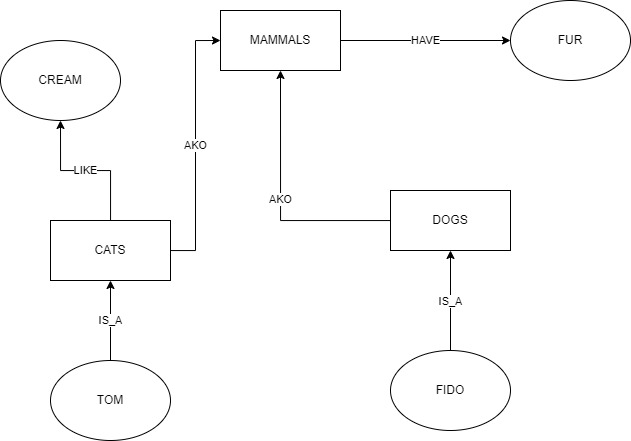
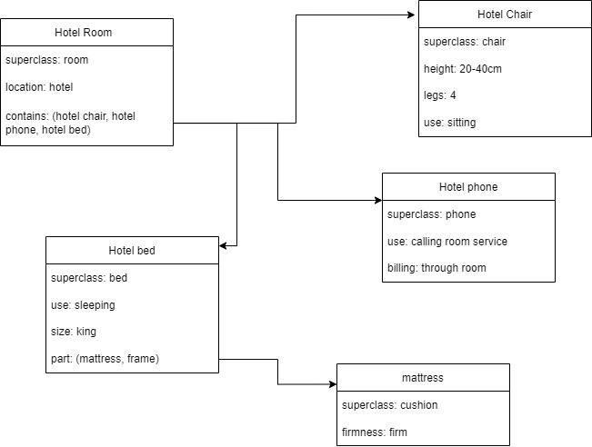

Semantic Net
Semantic Net/ Semantic Network is a graphical representation of predicate logic using nodes to represent object and
arcs to represent relations between them.
It is closer to way human structure things in real life.
It is easy to understand.
Princlple of Semantic net are:
- Nodes represent object by using circles or rectangle with name
- Relations are represented by arcs connecting the nodes
- Used to generate structure or objects
- Used to generate rules of knowledge base
For example:
like(cat, cream)
have(mammal, fur)
is_a(cat, mammal)
is_a(dog, mammal)
is_a(fido, dog)
is_a(tom, cat)

Frames
Frames also known as Slot and Filler Structure is a variant of semantic net that as collection of attributes or slots
and associated values that describe some real world entities.
Each node of Semantic Net can be represented by a Frame.
Frame on its own doesnot help much but with enough Frame a Frame System can be a powerful system for encoding information to support reasoning.
Some properties of Frame:
- Each node is represented with a frame that consist slots/information about the object.
- Each Frame can be represented as a data structure
- Easy to understand by non-developers
- Has expressive power
- Easy to include default information and detect missing values
- It can be easily implemented using object oriented programming
For Example: 